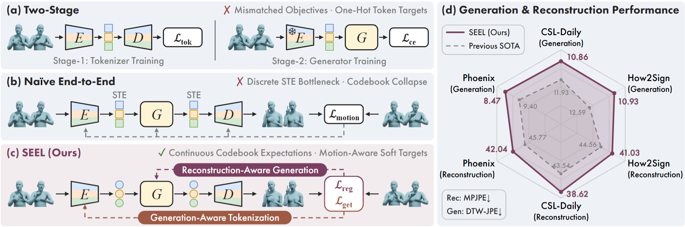
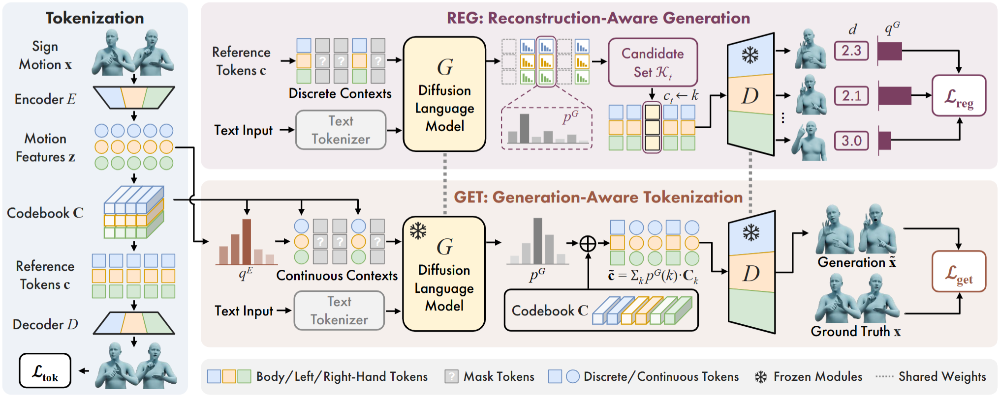

SEEL: Towards End-to-End 3D Sign Generation with Language Models
- Ronglai Zuo
- Fei Ni
- Junpeng Jing
- Rolandos Alexandros Potamias
- Jiankang Deng
- Stefanos Zafeiriou
- Imperial College London

Paradigms of 3D Sign Language Generation. (a) Two-stage training isolates the frozen tokenizer (encoder E and decoder D) from generation feedback and supervises the generator G with one-hot token targets. (b) Na\"ive end-to-end training relies on straight-through estimators (STE), suffering from biased gradients and codebook collapse. (c) SEEL decomposes generated-motion supervision via two complementary mechanisms, bypassing STE across both E-to-G and G-to-D interfaces. (d) Both the generation and reconstruction performance are improved over the previous SOTA LM-based method on three benchmarks.
Abstract
3D sign language generation aims to produce signing motion from written text. Motivated by the linguistic nature of sign language, recent methods combine a motion tokenizer with a language model to predict motion tokens from text. However, both components are optimized through a two-stage pipeline with mismatched objectives: the tokenizer minimizes reconstruction error in isolation, while the generator learns from rigid one-hot reference tokens. A straightforward end-to-end extension bridges discrete token selection with straight-through estimators (STE), suffering from biased gradients and codebook collapse. To address these limitations, we propose SEEL, an end-to-end framework that aligns tokenization and generation with motion quality through two complementary mechanisms. First, to overcome rigid one-hot supervision, reconstruction-aware generation decodes candidate tokens in context and converts their 3D motion errors into soft targets, guiding the generator with physical motion quality. Second, to propagate generation feedback without STE, generation-aware tokenization passes continuous codebook expectations through the frozen generator, routing generated-motion gradients to the tokenizer to prevent codebook collapse. Combining both mechanisms enables the tokenizer and generator to co-evolve, achieving state-of-the-art performance on CSL-Daily, How2Sign, and Phoenix-2014T.
Method Overview

Overview of SEEL. Tokenization (Left): The motion encoder maps sign motion to latent features, which are quantized into discrete reference tokens and decoded to reconstruct the motion. REG (Top): Given text and discrete contexts, the generator predicts token distributions at masked positions. Substituting candidate tokens and decoding them in context yields motion errors, which are converted into soft targets to guide generator training. GET (Bottom): Soft codebook assignments provide continuous context embeddings to the frozen generator. Its predictions form expected code embeddings, which are decoded into generated motion to train the encoder without STE.
Video Demos
Acknowledgements
S. Zafeiriou and part of this research were funded by the EPSRC Project GNOMON (EP/X011364/1) and a Turing AI Fellowship (EP/Z534699/1). F. Ni was supported by the European Union's Horizon Europe research and innovation programme under the Marie Skłodowska-Curie grant agreement No. 101282325. The authors thank Yuecong Min for coordinating the user study and the anonymous signers who participated in it.
The authors acknowledge the use of resources provided by the Isambard-AI National AI Research Resource (AIRR). Isambard-AI is operated by the University of Bristol and is funded by the UK Government's Department for Business, Innovation, Science and Trade via UK Research and Innovation; and the Science and Technology Facilities Council [ST/AIRR/I-A-I/1023]. The authors acknowledge the use of resources provided by the Zenith supercomputer, operated by the University of Cambridge and delivered in partnership with Dell Technologies and AMD. Zenith is funded by UK Research and Innovation (UKRI) under the UK AI Research Resource (AIRR; grant ST/Z000890/1), an initiative of the UK Government's Department for Business, Innovation, Science, and Trade, and the National Compute Resource (NCR; grant UKRI4064) programmes. The authors also acknowledge computational resources and support provided by the Imperial College Research Computing Service (DOI: 10.14469/hpc/2232).
Citation
@article{seel,
title={SEEL: Towards End-to-End 3D Sign Generation with Language Models},
author={Zuo, Ronglai and Ni, Fei and Jing, Junpeng and Potamias, Rolandos Alexandros and Deng, Jiankang and Zafeiriou, Stefanos},
journal={arXiv preprint},
year={2026}
}
Feel free to contact Ronglai Zuo if you have any questions. The website template is adapted from AniPortraitGAN.